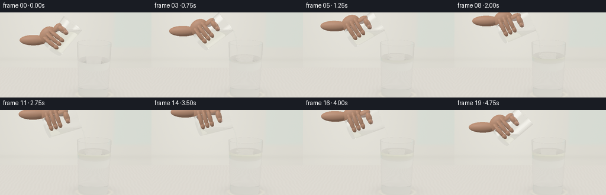
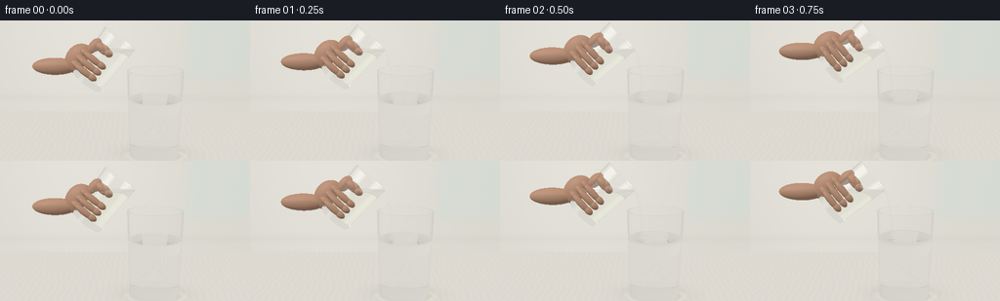

CODING AGENTS AS PIXEL WORLD MODELS
traex/GPT-6.1-Sol · material_0023
点击播放 · 原生 RGB 像素
逐轮保存的候选
回放视频、检查图与代码变化。
每份候选均可单独播放。实际图片检查记录在下方工具轨迹中。
候选 01播放与检查图
点击播放 · 原生 RGB 像素


展开代码变化
--- 上一保存版本
+++ 本次保存版本
@@ -0,0 +1,397 @@
+"""Procedural RGB film: glass-to-glass pour, analytic dielectric ray casting.
+Only numpy/Pillow and locally constructed geometry are used.
+"""
+from pathlib import Path
+import json
+import numpy as np
+from PIL import Image
+import artifact_io
+
+ROOT=Path(__file__).resolve().parent
+SPEC=json.loads((ROOT/'task_spec.json').read_text())
+W,H=SPEC['width'],SPEC['height']
+SS=2
+DT=np.float32
+EPS=0.00016
+
+def norm(v):
+ return v/np.maximum(np.linalg.norm(v,axis=-1,keepdims=True),1e-12)
+
+def rotation(a):
+ a=np.deg2rad(a); c,s=np.cos(a),np.sin(a)
+ return np.array([[c,s,0],[-s,c,0],[0,0,1]],dtype=DT)
+
+def smooth(a):
+ a=np.clip(a,0,1); return a*a*(3-2*a)
+
+class Cup:
+ def __init__(self, origin, R, h, rb, rt, thick=.038, floor=.075):
+ self.o=np.array(origin,dtype=DT); self.R=R
+ self.h=h; self.rb=rb; self.rt=rt; self.k=(rt-rb)/h
+ self.thick=thick; self.floor=floor
+ def local(self,p): return (p-self.o)@self.R
+ def inner_radius(self,y): return self.rb-self.thick+self.k*y
+ def inside(self,p):
+ q=self.local(p); rad=np.sum(q[:,[0,2]]**2,axis=1)
+ return (q[:,1]>=0)&(q[:,1]<=self.h)&(rad<=(self.rb+self.k*q[:,1])**2)&((q[:,1]<=self.floor)|(rad>=self.inner_radius(q[:,1])**2))
+ def hit(self,p,d):
+ q=self.local(p); v=d@self.R; n=len(q)
+ ts=np.full(n,np.inf,dtype=DT); ns=np.zeros((n,3),dtype=DT)
+ def put(t, normal, valid):
+ use=valid&(t>EPS)&(t<ts)
+ ts[use]=t[use]; ns[use]=normal[use]
+ for inner in (False,True):
+ b=self.rb-(self.thick if inner else 0); k=self.k
+ ry=b+k*q[:,1]; rd=k*v[:,1]
+ A=v[:,0]**2+v[:,2]**2-rd**2
+ B=2*(q[:,0]*v[:,0]+q[:,2]*v[:,2]-ry*rd)
+ C=q[:,0]**2+q[:,2]**2-ry**2
+ disc=B*B-4*A*C; sq=np.sqrt(np.maximum(disc,0))
+ for sg in (-1,1):
+ t=(-B+sg*sq)/(2*np.where(abs(A)>1e-9,A,1e-9))
+ hit=q+t[:,None]*v; yy=hit[:,1]
+ normal=np.stack([hit[:,0],-k*(b+k*yy),hit[:,2]],axis=1)
+ if inner: normal=-normal
+ put(t,normal,(disc>=0)&(yy>=(self.floor if inner else 0))&(yy<=self.h))
+ for y, sign, mode in ((0,-1,'outer'),(self.floor,1,'inner'),(self.h,1,'rim')):
+ t=(y-q[:,1])/np.where(abs(v[:,1])>1e-9,v[:,1],1e-9)
+ z=q+t[:,None]*v; rad=z[:,0]**2+z[:,2]**2
+ ro=(self.rb+self.k*y)**2; ri=self.inner_radius(y)**2
+ valid=(rad<=ro)
+ if mode=='inner': valid=rad<=ri
+ if mode=='rim': valid &= rad>=ri
+ normal=np.zeros((n,3),dtype=DT); normal[:,1]=sign
+ put(t,normal,valid)
+ return ts, norm(ns@self.R.T)
+
+class Fluid:
+ def __init__(self,cup,level,material,low=None,ripple=None):
+ self.cup=cup; self.level=level; self.material=material; self.low=low; self.ripple=ripple
+ def height(self,p):
+ if self.ripple is None: return np.full(len(p),self.level,dtype=DT), np.zeros(len(p),dtype=DT),np.zeros(len(p),dtype=DT)
+ cx,cz,phase,amplitude=self.ripple
+ xx=p[:,0]-cx; zz=p[:,2]-cz
+ rr=np.sqrt(xx*xx+zz*zz+1e-6)
+ wave=amplitude*np.sin(33*rr-phase)*np.exp(-3.8*rr)
+ # Tiny dimple, smooth concentric ripples; no violent splash.
+ wave-=amplitude*.7*np.exp(-rr*rr/.006)
+ deriv=amplitude*np.exp(-3.8*rr)*(33*np.cos(33*rr-phase)-3.8*np.sin(33*rr-phase))
+ deriv+=amplitude*.7*2*rr/.006*np.exp(-rr*rr/.006)
+ return self.level+wave,deriv*xx/rr,deriv*zz/rr
+ def inside(self,p):
+ q=self.cup.local(p); ri=self.cup.inner_radius(q[:,1]); height,_,_=self.height(p)
+ return (q[:,1]>=self.cup.floor)&(q[:,1]<=self.cup.h)&(q[:,0]**2+q[:,2]**2<=ri*ri)&(p[:,1]<=height)&((p[:,1]>=self.low) if self.low is not None else True)
+ def hit(self,p,d):
+ cup=self.cup; q=cup.local(p); v=d@cup.R; n=len(q)
+ ts=np.full(n,np.inf,dtype=DT); ns=np.zeros((n,3),dtype=DT)
+ def put(t,normal,valid):
+ use=valid&(t>EPS)&(t<ts)
+ ts[use]=t[use]; ns[use]=normal[use]
+ b=cup.rb-cup.thick; k=cup.k
+ ry=b+k*q[:,1]; rd=k*v[:,1]
+ A=v[:,0]**2+v[:,2]**2-rd**2
+ B=2*(q[:,0]*v[:,0]+q[:,2]*v[:,2]-ry*rd)
+ C=q[:,0]**2+q[:,2]**2-ry**2
+ disc=B*B-4*A*C; sq=np.sqrt(np.maximum(disc,0))
+ for sg in (-1,1):
+ t=(-B+sg*sq)/(2*np.where(abs(A)>1e-9,A,1e-9))
+ hit=q+t[:,None]*v; wp=p+t[:,None]*d
+ h,_,_=self.height(wp)
+ valid=(disc>=0)&(hit[:,1]>=cup.floor)&(hit[:,1]<=cup.h)&(wp[:,1]<=h)
+ if self.low is not None: valid&=wp[:,1]>=self.low
+ normal=np.stack([hit[:,0],-k*(b+k*hit[:,1]),hit[:,2]],axis=1)@cup.R.T
+ put(t,normal,valid)
+ # Horizontal free surface with analytically differentiated ripples.
+ t=(self.level-p[:,1])/np.where(abs(d[:,1])>1e-9,d[:,1],1e-9)
+ for _ in range(2 if self.ripple else 0):
+ hp=p+t[:,None]*d; h,dx,dz=self.height(hp)
+ den=d[:,1]-dx*d[:,0]-dz*d[:,2]
+ t-=(hp[:,1]-h)/np.where(abs(den)>1e-7,den,1e-7)
+ hp=p+t[:,None]*d; h,dx,dz=self.height(hp); loc=cup.local(hp)
+ normal=np.stack([-dx,np.ones(n,dtype=DT),-dz],axis=1)
+ valid=(loc[:,1]>=cup.floor)&(loc[:,1]<=cup.h)&(loc[:,0]**2+loc[:,2]**2<=cup.inner_radius(loc[:,1])**2)
+ put(t,normal,valid)
+ # Glass-bottom/fluid boundary.
+ t=(cup.floor-q[:,1])/np.where(abs(v[:,1])>1e-9,v[:,1],1e-9)
+ hp=p+t[:,None]*d; loc=cup.local(hp); h,_,_=self.height(hp)
+ normal=np.broadcast_to(np.array([0,-1,0],dtype=DT)@cup.R.T,(n,3))
+ valid=(loc[:,0]**2+loc[:,2]**2<=cup.inner_radius(cup.floor)**2)&(hp[:,1]<=h)
+ if self.low is not None: valid&=hp[:,1]>=self.low
+ put(t,normal,valid)
+ if self.low is not None:
+ t=(self.low-p[:,1])/np.where(abs(d[:,1])>1e-9,d[:,1],1e-9)
+ hp=p+t[:,None]*d; loc=cup.local(hp)
+ valid=(loc[:,1]>=cup.floor)&(loc[:,1]<=cup.h)&(loc[:,0]**2+loc[:,2]**2<=cup.inner_radius(loc[:,1])**2)
+ normal=np.zeros((n,3),dtype=DT); normal[:,1]=-1
+ put(t,normal,valid)
+ return ts,norm(ns)
+
+class Stream:
+ def __init__(self,lip,base,width,phase):
+ self.material=3; self.lip=lip; self.base=base
+ self.ys=np.linspace(base,lip[1]+.006,9)
+ s=lip[1]-self.ys
+ self.xs=lip[0]+.165*(1-np.exp(-3.5*np.maximum(s,0)))+.0025*np.sin(s*11+phase)*np.minimum(s*4,1)
+ self.rs=width*(.79+.28*np.exp(-s*7))*(1+.045*np.sin(s*28-phase*2))
+ self.z=lip[2]
+ def inside(self,p):
+ y=p[:,1]; x=np.interp(y,self.ys,self.xs); r=np.interp(y,self.ys,self.rs)
+ return (y>=self.ys[0])&(y<=self.ys[-1])&((p[:,0]-x)**2+(p[:,2]-self.z)**2<=r*r)
+ def hit(self,p,d):
+ n=len(p); ts=np.full(n,np.inf,dtype=DT); ns=np.zeros((n,3),dtype=DT)
+ for i in range(len(self.ys)-1):
+ y0,y1=self.ys[i:i+2]; ax=(self.xs[i+1]-self.xs[i])/(y1-y0); bx=self.xs[i]-ax*y0
+ ar=(self.rs[i+1]-self.rs[i])/(y1-y0); br=self.rs[i]-ar*y0
+ u=p[:,0]-ax*p[:,1]-bx; v=p[:,2]-self.z; rr=ar*p[:,1]+br
+ du=d[:,0]-ax*d[:,1]; dv=d[:,2]; dr=ar*d[:,1]
+ A=du*du+dv*dv-dr*dr; B=2*(u*du+v*dv-rr*dr); C=u*u+v*v-rr*rr
+ disc=B*B-4*A*C; sq=np.sqrt(np.maximum(disc,0))
+ for sg in (-1,1):
+ t=(-B+sg*sq)/(2*np.where(abs(A)>1e-10,A,1e-10)); y=p[:,1]+t*d[:,1]
+ valid=(disc>=0)&(t>EPS)&(t<ts)&(y>=y0)&(y<=y1)
+ un=u+t*du; vv=v+t*dv; r=rr+t*dr
+ normal=np.stack([un,-ax*un-ar*r,vv],axis=1)
+ ts[valid]=t[valid]; ns[valid]=normal[valid]
+ return ts,norm(ns)
+
+class Ellipsoid:
+ def __init__(self,center,axes,R=None,mat=4):
+ self.o=np.array(center,dtype=DT); self.axes=np.array(axes,dtype=DT); self.R=np.eye(3,dtype=DT) if R is None else R; self.material=mat
+ def inside(self,p): return np.sum((((p-self.o)@self.R)/self.axes)**2,axis=1)<=1
+ def hit(self,p,d):
+ q=((p-self.o)@self.R)/self.axes; v=(d@self.R)/self.axes
+ A=np.sum(v*v,axis=1); B=np.sum(q*v,axis=1); C=np.sum(q*q,axis=1)-1
+ disc=B*B-A*C; sq=np.sqrt(np.maximum(disc,0))
+ t=(-B-sq)/A; t2=(-B+sq)/A; t=np.where(t>EPS,t,t2)
+ t=np.where((disc>=0)&(t>EPS),t,np.inf).astype(DT)
+ hp=q+np.where(np.isfinite(t),t,0)[:,None]*v
+ return t,norm((hp/self.axes)@self.R.T)
+
+# The backdrop is a softly illuminated warm stone counter and a distant kitchen wall.
+def backdrop(p,d):
+ n=len(p)
+ # Latitudinal studio illumination; dark flags contrast with very broad white boxes.
+ up=np.clip(d[:,1],-1,1)
+ c=np.tile(np.array([.69,.67,.60],dtype=DT),(n,1))
+ c+=np.clip(up,0,1)[:,None]*np.array([.22,.23,.25],dtype=DT)
+ # Diffused rectangular windows, purposefully visible in curved glass reflections.
+ lobe=np.exp(-((d[:,0]+.65)/.19)**6-((d[:,2]-.35)/.52)**6)
+ c+=lobe[:,None]*np.array([1.9,1.93,1.95],dtype=DT)
+ lobe2=np.exp(-((d[:,0]-.62)/.11)**4-((d[:,2]+.25)/.65)**4)
+ c+=lobe2[:,None]*np.array([1.35,1.42,1.45],dtype=DT)
+ dark=np.exp(-((d[:,0]-.92)/.13)**6)
+ c*=1-.68*dark[:,None]
+ # Real backdrop plane, with a smooth blurred vertical window division.
+ tz=(-3.5-p[:,2])/np.where(abs(d[:,2])>1e-8,d[:,2],1e-8)
+ ty=(-.022-p[:,1])/np.where(abs(d[:,1])>1e-8,d[:,1],1e-8)
+ wall=(tz>0)&((ty<=0)|(tz<ty))&(d[:,2]<-.20)
+ if np.any(wall):
+ q=p[wall]+tz[wall,None]*d[wall]
+ cx=q[:,0]; yy=q[:,1]
+ glow=.07*np.exp(-((cx+1.5)/3)**2-((yy-3)/4)**2)
+ wc=np.column_stack([.71+glow,.695+glow,.635+glow])
+ window=smooth((cx-1.7)/.3)*smooth((4.1-cx)/.3)*smooth((yy-1.0)/.3)
+ wc=wc*(1-window[:,None]*.38)+window[:,None]*np.array([.24,.28,.26],dtype=DT)
+ # subtle distant, fully defocused panel behind the action
+ wc-=.022*np.exp(-((yy-.45)/.13)**2)[:,None]
+ c[wall]=wc
+ floor=(ty>0)&((tz<=0)|(ty<tz))&(d[:,1]<0)
+ if np.any(floor):
+ q=p[floor]+ty[floor,None]*d[floor]; x,z=q[:,0],q[:,2]
+ grain=.008*np.sin(x*38+np.sin(z*7))+.003*np.sin(z*105+x*50)
+ fc=np.column_stack([.73+grain,.705+grain,.65+grain])
+ # soft contact/caustic shadows beneath the receiving tumbler
+ sh=np.exp(-((x-.59)/.77)**2-((z+.02)/.51)**2)
+ core=np.exp(-((x-.59)/.60)**4-((z+.01)/.41)**4)
+ fc*=1-(.15*sh+.07*core)[:,None]
+ caust=np.exp(-((np.sqrt(((x-.61)/.68)**2+((z-.10)/.42)**2)-1)/.10)**2)
+ fc+=caust[:,None]*np.array([.07,.065,.039])
+ c[floor]=fc
+ return np.maximum(c,0)
+
+def shade_skin(p,n,d,material):
+ L=norm(np.array([[-3,5,4]],dtype=DT))[0]; L2=norm(np.array([[4,2,-1]],dtype=DT))[0]
+ diffuse=np.maximum(n@L,0)*.57+np.maximum(n@L2,0)*.18+.29
+ # Pale natural skin, softly backlit; warm sub-surface edge.
+ skin=np.array([.61,.347,.226],dtype=DT)
+ base=np.broadcast_to(skin,(len(p),3)).copy()
+ if material==5: base[:]=[.74,.46,.37]
+ noise=np.sin(p[:,0]*170+np.sin(p[:,1]*74))*np.sin(p[:,2]*121+p[:,1]*100)*.013
+ base+=noise[:,None]
+ out=base*diffuse[:,None]
+ half=norm(L[None,:]-d)
+ spec=np.maximum(np.sum(n*half,axis=1),0)**(40 if material==5 else 22)
+ out+=spec[:,None]*(.15 if material==5 else .044)
+ rim=(1-np.maximum(np.sum(n*-d,axis=1),0))**3
+ out+=rim[:,None]*np.array([.045,.023,.014],dtype=DT)
+ return out
+
+# Deterministic volume quadrature for a physically level oil surface in the tilted cup.
+rng=np.random.default_rng(817)
+volpoints=[]
+for _ in range(15000):
+ y=rng.uniform(.075,1.26); r=.385+.045*y/1.26
+ rr=r*np.sqrt(rng.random()); a=rng.uniform(0,2*np.pi)
+ volpoints.append([rr*np.cos(a),y,rr*np.sin(a)])
+volpoints=np.array(volpoints,dtype=DT)
+
+angles=[38,42,47,51,55,58,61,63,65,67,69,71,72,73,74,73,68,61,54,48]
+
+def build(frame,remaining):
+ R=rotation(angles[frame]); lift=.13*smooth((frame-16)/3)
+ lip=np.array([.10-lift,2.51+lift,.02],dtype=DT)
+ source= Cup(lip-np.array([.43,1.26,0],dtype=DT)@R.T,R,1.26,.385,.43,.032,.065)
+ receiver=Cup([.57,0,0],np.eye(3,dtype=DT),2.04,.59,.655,.037,.084)
+ heights=(volpoints@R.T+source.o)[:,1]
+ spill=np.mean(heights<=lip[1]-.006)
+ if frame==0: remaining=spill
+ remaining=min(remaining,spill)
+ oil_level=float(np.quantile(heights,remaining))
+ # A layer of immiscible coconut oil grows steadily on top of the water.
+ transferred=max(0,INITIAL_VOLUME-remaining)
+ layer=transferred*.49/(np.pi*.60*.60)
+ water_level=1.375
+ surface=water_level+layer
+ flowing=1<=frame<=16
+ flow=smooth(frame/2)*(1-smooth((frame-14)/3))
+ objects=[receiver,source]
+ fluids=[Fluid(receiver,water_level,2),Fluid(source,oil_level,3)]
+ if layer>.0005:
+ fluids.append(Fluid(receiver,surface,3,low=water_level,ripple=(.27,lip[2],frame*1.05,.007*flow+.0015*np.exp(-max(frame-16,0)))))
+ else:
+ fluids[0].ripple=(.27,lip[2],frame*1.05,.002*flow)
+ stream=None
+ if flowing and flow>.04:
+ stream=Stream(lip,surface+.001,.029*flow,frame*.75)
+ # A hand enters from the left and securely grips the cup; fingers move with it.
+ opaque=[]
+ def hand(local,axes,mat=4):
+ opaque.append(Ellipsoid(source.o+np.array(local,dtype=DT)@R.T,axes,R,mat))
+ hand([-.46,.30,-.10],[.30,.37,.20])
+ # wrist disappears naturally at the left edge of the close-up
+ wrist=source.o+np.array([-.50,.0,-.09],dtype=DT)@R.T
+ opaque.append(Ellipsoid(wrist+[-.35,.025,-.02],[.53,.20,.19],None,4))
+ # Curved finger joints, on the lower front of the tumbler.
+ for y,length in ((.22,.49),(.39,.52),(.56,.48)):
+ hand([-.39,y,.25],[.16,.075,.105])
+ hand([-.18,y+.009,.36],[length*.52,.077,.090])
+ hand([.018,y+.012,.355],[.12,.077,.093])
+ hand([-.34,.78,.12],[.13,.21,.13])
+ hand([-.16,.88,.29],[.19,.105,.115])
+ hand([-.02,.88,.335],[.102,.083,.090])
+ # Tiny natural nail catches a muted highlight on the thumb's upper surface.
+ hand([.012,.925,.385],[.060,.032,.027],5)
+ drops=[]
+ if frame in (1,17,18):
+ if frame==1:
+ yy=2.16
+ drops.append(Ellipsoid([lip[0]+.07,yy,lip[2]],[.026,.061,.026],mat=3))
+ elif frame==17:
+ drops.append(Ellipsoid([.255,1.92,.02],[.024,.067,.024],mat=3))
+ drops.append(Ellipsoid([.255,2.20,.02],[.020,.044,.020],mat=3))
+ else:
+ drops.append(Ellipsoid([.258,surface+.10,.02],[.021,.029,.021],mat=3))
+ # Very small clear lenticular oil beads immediately underneath the impact point.
+ if 3<=frame<=16:
+ for j in range(2):
+ a=frame*.47+j*2.5
+ drops.append(Ellipsoid([.28+.04*np.sin(a),water_level-.025-j*.035,.02+.04*np.cos(a)],[.025,.014,.022],mat=3))
+ return objects,fluids,stream,opaque,drops,remaining
+
+R0=rotation(angles[0]); lip0=np.array([.10,2.51,.02],dtype=DT)
+o0=lip0-np.array([.43,1.26,0],dtype=DT)@R0.T
+INITIAL_VOLUME=float(np.mean((volpoints@R0.T+o0)[:,1]<=lip0[1]-.006))
+
+# Camera: static macro-style close-up, natural oblique view of the water surface.
+eye=np.array([0,3.55,8.2],dtype=DT); target=np.array([-.13,1.56,0],dtype=DT)
+fwd=norm((target-eye)[None,:])[0]; right=norm(np.cross(fwd,[0,1,0])[None,:])[0]; up=np.cross(right,fwd)
+xx,yy=np.meshgrid((np.arange(W*SS)+.5)/(W*SS)*2-1,1-(np.arange(H*SS)+.5)/(H*SS)*2)
+tan=np.tan(np.deg2rad(22.0)/2)
+dirs=norm(fwd+xx.reshape(-1,1)*right*tan*W/H+yy.reshape(-1,1)*up*tan).astype(DT)
+
+IOR=np.array([1,1.51,1.333,1.455,1,1],dtype=DT)
+ABS=np.array([[0,0,0],[.028,.014,.007],[.016,.008,.004],[.034,.023,.085],[0,0,0],[0,0,0]],dtype=DT)
+
+def render(frame,remaining):
+ cups,fluids,stream,hands,drops,remaining=build(frame,remaining)
+ shapes=[(o,1) for o in cups]+[(o,o.material) for o in fluids]
+ if stream is not None: shapes.append((stream,3))
+ shapes += [(o,3) for o in drops]+[(o,o.material) for o in hands]
+ n=len(dirs); ids=np.arange(n); p=np.tile(eye,(n,1)); d=dirs.copy()
+ med=np.zeros(n,dtype=np.int8); weight=np.ones((n,3),dtype=DT); color=np.zeros((n,3),dtype=DT)
+ def medium_at(q):
+ m=np.zeros(len(q),dtype=np.int8)
+ for o in cups: m[o.inside(q)]=1
+ for o in fluids: m[o.inside(q)]=o.material
+ if stream is not None: m[stream.inside(q)]=3
+ for o in drops: m[o.inside(q)]=3
+ return m
+ for bounce in range(18):
+ if not len(p): break
+ ts=np.full(len(p),np.inf,dtype=DT); normals=np.zeros_like(p); mat=np.zeros(len(p),dtype=np.int8)
+ # Cheap sphere bounds keep the numerous hand ellipsoids out of most ray tests.
+ for obj,material in shapes:
+ if isinstance(obj,Ellipsoid):
+ radius=float(np.max(obj.axes)); vv=obj.o-p; proj=np.sum(vv*d,axis=1)
+ may=(np.sum(vv*vv,axis=1)-proj*proj<=radius*radius)&(proj+radius>0)
+ ix=np.flatnonzero(may)
+ if not len(ix): continue
+ t,nn=obj.hit(p[ix],d[ix]); take=t<ts[ix]; use=ix[take]
+ ts[use]=t[take]; normals[use]=nn[take]; mat[use]=material
+ else:
+ t,nn=obj.hit(p,d); use=t<ts
+ ts[use]=t[use]; normals[use]=nn[use]; mat[use]=material
+ miss=~np.isfinite(ts)
+ if np.any(miss): color[ids[miss]]+=weight[miss]*backdrop(p[miss],d[miss])
+ keep=~miss
+ ids,p,d,med,weight,ts,normals,mat=[a[keep] for a in (ids,p,d,med,weight,ts,normals,mat)]
+ if not len(p): break
+ weight*=np.exp(-ABS[med]*ts[:,None])
+ hp=p+ts[:,None]*d
+ opaque=mat>=4
+ for mm in (4,5):
+ k=mat==mm
+ if np.any(k): color[ids[k]]+=weight[k]*shade_skin(hp[k],normals[k],d[k],mm)
+ keep=~opaque
+ ids,p,d,med,weight,hp,normals,mat=[a[keep] for a in (ids,p,d,med,weight,hp,normals,mat)]
+ if not len(p): break
+ nextmed=medium_at(hp+d*(EPS*3))
+ # The geometric outward normal is turned to face the incident ray.
+ N=normals*np.where(np.sum(normals*d,axis=1)>0,-1,1)[:,None]
+ ci=-np.sum(N*d,axis=1); eta=IOR[med]/IOR[nextmed]
+ k=1-eta*eta*(1-ci*ci); tir=k<0
+ f0=((IOR[med]-IOR[nextmed])/(IOR[med]+IOR[nextmed]))**2
+ fres=f0+(1-f0)*(1-ci)**5
+ fres=np.where(med==nextmed,0,fres)
+ fres=np.where(tir,1,fres)
+ reflected=norm(d+2*ci[:,None]*N)
+ # Analytic studio lighting supplies clean optical highlights on every interface.
+ refcol=backdrop(hp+N*EPS*3,reflected)
+ color[ids]+=weight*fres[:,None]*refcol*.91
+ weight*=1-fres[:,None]
+ transmitted=norm(eta[:,None]*d+(eta*ci-np.sqrt(np.maximum(k,0)))[:,None]*N)
+ d=transmitted; med=nextmed
+ p=hp+d*(EPS*3)
+ keep=np.max(weight,axis=1)>.012
+ ids,p,d,med,weight=[a[keep] for a in (ids,p,d,med,weight)]
+ if len(p): color[ids]+=weight*backdrop(p,d)
+ # Film-like soft highlight roll-off, converted from linear radiance to display RGB.
+ c=color.reshape(H*SS,W*SS,3)
+ c=np.maximum(c,0)
+ c=np.where(c<=.85,c,.85+(c-.85)/(1+(c-.85)*2.8))
+ c=np.clip(c,0,1)**(1/2.2)
+ # Fine deterministic sensor grain, below a display quantization step.
+ grain=np.random.default_rng(2026).normal(0,.0007,c.shape[:2])
+ c=np.clip(c+grain[:,:,None],0,1)
+ im=Image.fromarray(np.uint8(c*255+.5))
+ im=im.resize((W,H),Image.Resampling.LANCZOS)
+ return np.asarray(im),remaining
+
+if __name__=='__main__':
+ import time
+ start=time.time(); frames=[]; remaining=INITIAL_VOLUME
+ for frame in range(SPEC['frames']):
+ im,remaining=render(frame,remaining); frames.append(im)
+ print(f'Frame {frame+1}/{SPEC["frames"]} rendered, {time.time()-start:.1f}s',flush=True)
+ artifact_io.save(np.stack(frames),ROOT)
+ print('Saved RGB video to pixels.npz, frames/, and index.html',flush=True)
可观测工具轨迹
实际执行的命令与返回图片。
命令 1exit 0
/bin/bash -lc "ls -la && cat prompt.txt && printf '\\n---RULES---\\n' && cat GENERATION_RULES.md && printf '\\n---SPEC---\\n' && cat task_spec.json"
命令 2exit 0
/bin/bash -lc "cat artifact_io.py && cat player_template.html && python - <<'PY'
import numpy, PIL
print('numpy',numpy.__version__,'PIL',PIL.__version__)
PY"命令 3exit 0
/bin/bash -lc "cat > generate.py <<'PY'
\"\"\"Procedural RGB film: glass-to-glass pour, analytic dielectric ray casting.
Only numpy/Pillow and locally constructed geometry are used.
\"\"\"
from pathlib import Path
import json
import numpy as np
from PIL import Image
import artifact_io
ROOT=Path(__file__).resolve().parent
SPEC=json.loads((ROOT/'task_spec.json').read_text())
W,H=SPEC['width'],SPEC['height']
SS=2
DT=np.float32
EPS=0.00016
def norm(v):
return v/np.maximum(np.linalg.norm(v,axis=-1,keepdims=True),1e-12)
def rotation(a):
a=np.deg2rad(a); c,s=np.cos(a),np.sin(a)
return np.array([[c,s,0],[-s,c,0],[0,0,1]],dtype=DT)
def smooth(a):
a=np.clip(a,0,1); return a*a*(3-2*a)
class Cup:
def __init__(self, origin, R, h, rb, rt, thick=.038, floor=.075):
self.o=np.array(origin,dtype=DT); self.R=R
self.h=h; self.rb=rb; self.rt=rt; self.k=(rt-rb)/h
self.thick=thick; self.floor=floor
def local(self,p): return (p-self.o)@self.R
def inner_radius(self,y): return self.rb-self.thick+self.k*y
def inside(self,p):
q=self.local(p); rad=np.sum(q[:,[0,2]]**2,axis=1)
return (q[:,1]>=0)&(q[:,1]<=self.h)&(rad<=(self.rb+self.k*q[:,1])**2)&((q[:,1]<=self.floor)|(rad>=self.inner_radius(q[:,1])**2))
def hit(self,p,d):
q=self.local(p); v=d@self.R; n=len(q)
ts=np.full(n,np.inf,dtype=DT); ns=np.zeros((n,3),dtype=DT)
def put(t, normal, valid):
use=valid&(t>EPS)&(t<ts)
ts[use]=t[use]; ns[use]=normal[use]
for inner in (False,True):
b=self.rb-(self.thick if inner else 0); k=self.k
ry=b+k*q[:,1]; rd=k*v[:,1]
A=v[:,0]**2+v[:,2]**2-rd**2
B=2*(q[:,0]*v[:,0]+q[:,2]*v[:,2]-ry*rd)
C=q[:,0]**2+q[:,2]**2-ry**2
disc=B*B-4*A*C; sq=np.sqrt(np.maximum(disc,0))
for sg in (-1,1):
t=(-B+sg*sq)/(2*np.where(abs(A)>1e-9,A,1e-9))
hit=q+t[:,None]*v; yy=hit[:,1]
normal=np.stack([hit[:,0],-k*(b+k*yy),hit[:,2]],axis=1)
if inner: normal=-normal
put(t,normal,(disc>=0)&(yy>=(self.floor if inner else 0))&(yy<=self.h))
for y, sign, mode in ((0,-1,'outer'),(self.floor,1,'inner'),(self.h,1,'rim')):
t=(y-q[:,1])/np.where(abs(v[:,1])>1e-9,v[:,1],1e-9)
z=q+t[:,None]*v; rad=z[:,0]**2+z[:,2]**2
ro=(self.rb+self.k*y)**2; ri=self.inner_radius(y)**2
valid=(rad<=ro)
if mode=='inner': valid=rad<=ri
if mode=='rim': valid &= rad>=ri
normal=np.zeros((n,3),dtype=DT); normal[:,1]=sign
put(t,normal,valid)
return ts, norm(ns@self.R.T)
class Fluid:
def __init__(self,cup,level,material,low=None,ripple=None):
self.cup=cup; self.level=level; self.material=material; self.low=low; self.ripple=ripple
def height(self,p):
if self.ripple is None: return np.full(len(p),self.level,dtype=DT), np.zeros(len(p),dtype=DT),np.zeros(len(p),dtype=DT)
cx,cz,phase,amplitude=self.ripple
xx=p[:,0]-cx; zz=p[:,2]-cz
rr=np.sqrt(xx*xx+zz*zz+1e-6)
wave=amplitude*np.sin(33*rr-phase)*np.exp(-3.8*rr)
# Tiny dimple, smooth concentric ripples; no violent splash.
wave-=amplitude*.7*np.exp(-rr*rr/.006)
deriv=amplitude*np.exp(-3.8*rr)*(33*np.cos(33*rr-phase)-3.8*np.sin(33*rr-phase))
deriv+=amplitude*.7*2*rr/.006*np.exp(-rr*rr/.006)
return self.level+wave,deriv*xx/rr,deriv*zz/rr
def inside(self,p):
q=self.cup.local(p); ri=self.cup.inner_radius(q[:,1]); height,_,_=self.height(p)
return (q[:,1]>=self.cup.floor)&(q[:,1]<=self.cup.h)&(q[:,0]**2+q[:,2]**2<=ri*ri)&(p[:,1]<=height)&((p[:,1]>=self.low) if self.low is not None else True)
def hit(self,p,d):
cup=self.cup; q=cup.local(p); v=d@cup.R; n=len(q)
ts=np.full(n,np.inf,dtype=DT); ns=np.zeros((n,3),dtype=DT)
def put(t,normal,valid):
use=valid&(t>EPS)&(t<ts)
ts[use]=t[use]; ns[use]=normal[use]
b=cup.rb-cup.thick; k=cup.k
ry=b+k*q[:,1]; rd=k*v[:,1]
A=v[:,0]**2+v[:,2]**2-rd**2
B=2*(q[:,0]*v[:,0]+q[:,2]*v[:,2]-ry*rd)
C=q[:,0]**2+q[:,2]**2-ry**2
disc=B*B-4*A*C; sq=np.sqrt(np.maximum(disc,0))
for sg in (-1,1):
t=(-B+sg*sq)/(2*np.where(abs(A)>1e-9,A,1e-9))
hit=q+t[:,None]*v; wp=p+t[:,None]*d
h,_,_=self.height(wp)
valid=(disc>=0)&(hit[:,1]>=cup.floor)&(hit[:,1]<=cup.h)&(wp[:,1]<=h)
if self.low is not None: valid&=wp[:,1]>=self.low
normal=np.stack([hit[:,0],-k*(b+k*hit[:,1]),hit[:,2]],axis=1)@cup.R.T
put(t,normal,valid)
# Horizontal free surface with analytically differentiated ripples.
t=(self.level-p[:,1])/np.where(abs(d[:,1])>1e-9,d[:,1],1e-9)
for _ in range(2 if self.ripple else 0):
hp=p+t[:,None]*d; h,dx,dz=self.height(hp)
den=d[:,1]-dx*d[:,0]-dz*d[:,2]
t-=(hp[:,1]-h)/np.where(abs(den)>1e-7,den,1e-7)
hp=p+t[:,None]*d; h,dx,dz=self.height(hp); loc=cup.local(hp)
normal=np.stack([-dx,np.ones(n,dtype=DT),-dz],axis=1)
valid=(loc[:,1]>=cup.floor)&(loc[:,1]<=cup.h)&(loc[:,0]**2+loc[:,2]**2<=cup.inner_radius(loc[:,1])**2)
put(t,normal,valid)
# Glass-bottom/fluid boundary.
t=(cup.floor-q[:,1])/np.where(abs(v[:,1])>1e-9,v[:,1],1e-9)
hp=p+t[:,None]*d; loc=cup.local(hp); h,_,_=self.height(hp)
normal=np.broadcast_to(np.array([0,-1,0],dtype=DT)@cup.R.T,(n,3))
valid=(loc[:,0]**2+loc[:,2]**2<=cup.inner_radius(cup.floor)**2)&(hp[:,1]<=h)
if self.low is not None: valid&=hp[:,1]>=self.low
put(t,normal,valid)
if self.low is not None:
t=(self.low-p[:,1])/np.where(abs(d[:,1])>1e-9,d[:,1],1e-9)
hp=p+t[:,None]*d; loc=cup.local(hp)
valid=(loc[:,1]>=cup.floor)&(loc[:,1]<=cup.h)&(loc[:,0]**2+loc[:,2]**2<=cup.inner_radius(loc[:,1])**2)
normal=np.zeros((n,3),dtype=DT); normal[:,1]=-1
put(t,normal,valid)
return ts,norm(ns)
class Stream:
def __init__(self,lip,base,width,phase):
self.material=3; self.lip=lip; self.base=base
self.ys=np.linspace(base,lip[1]+.006,9)
s=lip[1]-self.ys
self.xs=lip[0]+.165*(1-np.exp(-3.5*np.maximum(s,0)))+.0025*np.sin(s*11+phase)*np.minimum(s*4,1)
self.rs=width*(.79+.28*np.exp(-s*7))*(1+.045*np.sin(s*28-phase*2))
self.z=lip[2]
def inside(self,p):
y=p[:,1]; x=np.interp(y,self.ys,self.xs); r=np.interp(y,self.ys,self.rs)
return (y>=self.ys[0])&(y<=self.ys[-1])&((p[:,0]-x)**2+(p[:,2]-self.z)**2<=r*r)
def hit(self,p,d):
n=len(p); ts=np.full(n,np.inf,dtype=DT); ns=np.zeros((n,3),dtype=DT)
for i in range(len(self.ys)-1):
y0,y1=self.ys[i:i+2]; ax=(self.xs[i+1]-self.xs[i])/(y1-y0); bx=self.xs[i]-ax*y0
ar=(self.rs[i+1]-self.rs[i])/(y1-y0); br=self.rs[i]-ar*y0
u=p[:,0]-ax*p[:,1]-bx; v=p[:,2]-self.z; rr=ar*p[:,1]+br
du=d[:,0]-ax*d[:,1]; dv=d[:,2]; dr=ar*d[:,1]
A=du*du+dv*dv-dr*dr; B=2*(u*du+v*dv-rr*dr); C=u*u+v*v-rr*rr
disc=B*B-4*A*C; sq=np.sqrt(np.maximum(disc,0))
for sg in (-1,1):
t=(-B+sg*sq)/(2*np.where(abs(A)>1e-10,A,1e-10)); y=p[:,1]+t*d[:,1]
valid=(disc>=0)&(t>EPS)&(t<ts)&(y>=y0)&(y<=y1)
un=u+t*du; vv=v+t*dv; r=rr+t*dr
normal=np.stack([un,-ax*un-ar*r,vv],axis=1)
ts[valid]=t[valid]; ns[valid]=normal[valid]
return ts,norm(ns)
class Ellipsoid:
def __init__(self,center,axes,R=None,mat=4):
self.o=np.array(center,dtype=DT); self.axes=np.array(axes,dtype=DT); self.R=np.eye(3,dtype=DT) if R is None else R; self.material=mat
def inside(self,p): return np.sum((((p-self.o)@self.R)/self.axes)**2,axis=1)<=1
def hit(self,p,d):
q=((p-self.o)@self.R)/self.axes; v=(d@self.R)/self.axes
A=np.sum(v*v,axis=1); B=np.sum(q*v,axis=1); C=np.sum(q*q,axis=1)-1
disc=B*B-A*C; sq=np.sqrt(np.maximum(disc,0))
t=(-B-sq)/A; t2=(-B+sq)/A; t=np.where(t>EPS,t,t2)
t=np.where((disc>=0)&(t>EPS),t,np.inf).astype(DT)
hp=q+np.where(np.isfinite(t),t,0)[:,None]*v
return t,norm((hp/self.axes)@self.R.T)
# The backdrop is a softly illuminated warm stone counter and a distant kitchen wall.
def backdrop(p,d):
n=len(p)
# Latitudinal studio illumination; dark flags contrast with very broad white boxes.
up=np.clip(d[:,1],-1,1)
c=np.tile(np.array([.69,.67,.60],dtype=DT),(n,1))
c+=np.clip(up,0,1)[:,None]*np.array([.22,.23,.25],dtype=DT)
# Diffused rectangular windows, purposefully visible in curved glass reflections.
lobe=np.exp(-((d[:,0]+.65)/.19)**6-((d[:,2]-.35)/.52)**6)
c+=lobe[:,None]*np.array([1.9,1.93,1.95],dtype=DT)
lobe2=np.exp(-((d[:,0]-.62)/.11)**4-((d[:,2]+.25)/.65)**4)
c+=lobe2[:,None]*np.array([1.35,1.42,1.45],dtype=DT)
dark=np.exp(-((d[:,0]-.92)/.13)**6)
c*=1-.68*dark[:,None]
# Real backdrop plane, with a smooth blurred vertical window division.
tz=(-3.5-p[:,2])/np.where(abs(d[:,2])>1e-8,d[:,2],1e-8)
ty=(-.022-p[:,1])/np.where(abs(d[:,1])>1e-8,d[:,1],1e-8)
wall=(tz>0)&((ty<=0)|(tz<ty))&(d[:,2]<-.20)
if np.any(wall):
q=p[wall]+tz[wall,None]*d[wall]
cx=q[:,0]; yy=q[:,1]
glow=.07*np.exp(-((cx+1.5)/3)**2-((yy-3)/4)**2)
wc=np.column_stack([.71+glow,.695+glow,.635+glow])
window=smooth((cx-1.7)/.3)*smooth((4.1-cx)/.3)*smooth((yy-1.0)/.3)
wc=wc*(1-window[:,None]*.38)+window[:,None]*np.array([.24,.28,.26],dtype=DT)
# subtle distant, fully defocused panel behind the action
wc-=.022*np.exp(-((yy-.45)/.13)**2)[:,None]
c[wall]=wc
floor=(ty>0)&((tz<=0)|(ty<tz))&(d[:,1]<0)
if np.any(floor):
q=p[floor]+ty[floor,None]*d[floor]; x,z=q[:,0],q[:,2]
grain=.008*np.sin(x*38+np.sin(z*7))+.003*np.sin(z*105+x*50)
fc=np.column_stack([.73+grain,.705+grain,.65+grain])
# soft contact/caustic shadows beneath the receiving tumbler
sh=np.exp(-((x-.59)/.77)**2-((z+.02)/.51)**2)
core=np.exp(-((x-.59)/.60)**4-((z+.01)/.41)**4)
fc*=1-(.15*sh+.07*core)[:,None]
caust=np.exp(-((np.sqrt(((x-.61)/.68)**2+((z-.10)/.42)**2)-1)/.10)**2)
fc+=caust[:,None]*np.array([.07,.065,.039])
c[floor]=fc
return np.maximum(c,0)
def shade_skin(p,n,d,material):
L=norm(np.array([[-3,5,4]],dtype=DT))[0]; L2=norm(np.array([[4,2,-1]],dtype=DT))[0]
diffuse=np.maximum(n@L,0)*.57+np.maximum(n@L2,0)*.18+.29
# Pale natural skin, softly backlit; warm sub-surface edge.
skin=np.array([.61,.347,.226],dtype=DT)
base=np.broadcast_to(skin,(len(p),3)).copy()
if material==5: base[:]=[.74,.46,.37]
noise=np.sin(p[:,0]*170+np.sin(p[:,1]*74))*np.sin(p[:,2]*121+p[:,1]*100)*.013
base+=noise[:,None]
out=base*diffuse[:,None]
half=norm(L[None,:]-d)
spec=np.maximum(np.sum(n*half,axis=1),0)**(40 if material==5 else 22)
out+=spec[:,None]*(.15 if material==5 else .044)
rim=(1-np.maximum(np.sum(n*-d,axis=1),0))**3
out+=rim[:,None]*np.array([.045,.023,.014],dtype=DT)
return out
# Deterministic volume quadrature for a physically level oil surface in the tilted cup.
rng=np.random.default_rng(817)
volpoints=[]
for _ in range(15000):
y=rng.uniform(.075,1.26); r=.385+.045*y/1.26
rr=r*np.sqrt(rng.random()); a=rng.uniform(0,2*np.pi)
volpoints.append([rr*np.cos(a),y,rr*np.sin(a)])
volpoints=np.array(volpoints,dtype=DT)
angles=[38,42,47,51,55,58,61,63,65,67,69,71,72,73,74,73,68,61,54,48]
def build(frame,remaining):
R=rotation(angles[frame]); lift=.13*smooth((frame-16)/3)
lip=np.array([.10-lift,2.51+lift,.02],dtype=DT)
source= Cup(lip-np.array([.43,1.26,0],dtype=DT)@R.T,R,1.26,.385,.43,.032,.065)
receiver=Cup([.57,0,0],np.eye(3,dtype=DT),2.04,.59,.655,.037,.084)
heights=(volpoints@R.T+source.o)[:,1]
spill=np.mean(heights<=lip[1]-.006)
if frame==0: remaining=spill
remaining=min(remaining,spill)
oil_level=float(np.quantile(heights,remaining))
# A layer of immiscible coconut oil grows steadily on top of the water.
transferred=max(0,INITIAL_VOLUME-remaining)
layer=transferred*.49/(np.pi*.60*.60)
water_level=1.375
surface=water_level+layer
flowing=1<=frame<=16
flow=smooth(frame/2)*(1-smooth((frame-14)/3))
objects=[receiver,source]
fluids=[Fluid(receiver,water_level,2),Fluid(source,oil_level,3)]
if layer>.0005:
fluids.append(Fluid(receiver,surface,3,low=water_level,ripple=(.27,lip[2],frame*1.05,.007*flow+.0015*np.exp(-max(frame-16,0)))))
else:
fluids[0].ripple=(.27,lip[2],frame*1.05,.002*flow)
stream=None
if flowing and flow>.04:
stream=Stream(lip,surface+.001,.029*flow,frame*.75)
# A hand enters from the left and securely grips the cup; fingers move with it.
opaque=[]
def hand(local,axes,mat=4):
opaque.append(Ellipsoid(source.o+np.array(local,dtype=DT)@R.T,axes,R,mat))
hand([-.46,.30,-.10],[.30,.37,.20])
# wrist disappears naturally at the left edge of the close-up
wrist=source.o+np.array([-.50,.0,-.09],dtype=DT)@R.T
opaque.append(Ellipsoid(wrist+[-.35,.025,-.02],[.53,.20,.19],None,4))
# Curved finger joints, on the lower front of the tumbler.
for y,length in ((.22,.49),(.39,.52),(.56,.48)):
hand([-.39,y,.25],[.16,.075,.105])
hand([-.18,y+.009,.36],[length*.52,.077,.090])
hand([.018,y+.012,.355],[.12,.077,.093])
hand([-.34,.78,.12],[.13,.21,.13])
hand([-.16,.88,.29],[.19,.105,.115])
hand([-.02,.88,.335],[.102,.083,.090])
# Tiny natural nail catches a muted highlight on the thumb's upper surface.
hand([.012,.925,.385],[.060,.032,.027],5)
drops=[]
if frame in (1,17,18):
if frame==1:
yy=2.16
drops.append(Ellipsoid([lip[0]+.07,yy,lip[2]],[.026,.061,.026],mat=3))
elif frame==17:
drops.append(Ellipsoid([.255,1.92,.02],[.024,.067,.024],mat=3))
drops.append(Ellipsoid([.255,2.20,.02],[.020,.044,.020],mat=3))
else:
drops.append(Ellipsoid([.258,surface+.10,.02],[.021,.029,.021],mat=3))
# Very small clear lenticular oil beads immediately underneath the impact point.
if 3<=frame<=16:
for j in range(2):
a=frame*.47+j*2.5
drops.append(Ellipsoid([.28+.04*np.sin(a),water_level-.025-j*.035,.02+.04*np.cos(a)],[.025,.014,.022],mat=3))
return objects,fluids,stream,opaque,drops,remaining
R0=rotation(angles[0]); lip0=np.array([.10,2.51,.02],dtype=DT)
o0=lip0-np.array([.43,1.26,0],dtype=DT)@R0.T
INITIAL_VOLUME=float(np.mean((volpoints@R0.T+o0)[:,1]<=lip0[1]-.006))
# Camera: static macro-style close-up, natural oblique view of the water surface.
eye=np.array([0,3.55,8.2],dtype=DT); target=np.array([-.13,1.56,0],dtype=DT)
fwd=norm((target-eye)[None,:])[0]; right=norm(np.cross(fwd,[0,1,0])[None,:])[0]; up=np.cross(right,fwd)
xx,yy=np.meshgrid((np.arange(W*SS)+.5)/(W*SS)*2-1,1-(np.arange(H*SS)+.5)/(H*SS)*2)
tan=np.tan(np.deg2rad(22.0)/2)
dirs=norm(fwd+xx.reshape(-1,1)*right*tan*W/H+yy.reshape(-1,1)*up*tan).astype(DT)
IOR=np.array([1,1.51,1.333,1.455,1,1],dtype=DT)
ABS=np.array([[0,0,0],[.028,.014,.007],[.016,.008,.004],[.034,.023,.085],[0,0,0],[0,0,0]],dtype=DT)
def render(frame,remaining):
cups,fluids,stream,hands,drops,remaining=build(frame,remaining)
shapes=[(o,1) for o in cups]+[(o,o.material) for o in fluids]
if stream is not None: shapes.append((stream,3))
shapes += [(o,3) for o in drops]+[(o,o.material) for o in hands]
n=len(dirs); ids=np.arange(n); p=np.tile(eye,(n,1)); d=dirs.copy()
med=np.zeros(n,dtype=np.int8); weight=np.ones((n,3),dtype=DT); color=np.zeros((n,3),dtype=DT)
def medium_at(q):
m=np.zeros(len(q),dtype=np.int8)
for o in cups: m[o.inside(q)]=1
for o in fluids: m[o.inside(q)]=o.material
if stream is not None: m[stream.inside(q)]=3
for o in drops: m[o.inside(q)]=3
return m
for bounce in range(18):
if not len(p): break
ts=np.full(len(p),np.inf,dtype=DT); normals=np.zeros_like(p); mat=np.zeros(len(p),dtype=np.int8)
# Cheap sphere bounds keep the numerous hand ellipsoids out of most ray tests.
for obj,material in shapes:
if isinstance(obj,Ellipsoid):
radius=float(np.max(obj.axes)); vv=obj.o-p; proj=np.sum(vv*d,axis=1)
may=(np.sum(vv*vv,axis=1)-proj*proj<=radius*radius)&(proj+radius>0)
ix=np.flatnonzero(may)
if not len(ix): continue
t,nn=obj.hit(p[ix],d[ix]); take=t<ts[ix]; use=ix[take]
ts[use]=t[take]; normals[use]=nn[take]; mat[use]=material
else:
t,nn=obj.hit(p,d); use=t<ts
ts[use]=t[use]; normals[use]=nn[use]; mat[use]=material
miss=~np.isfinite(ts)
if np.any(miss): color[ids[miss]]+=weight[miss]*backdrop(p[miss],d[miss])
keep=~miss
ids,p,d,med,weight,ts,normals,mat=[a[keep] for a in (ids,p,d,med,weight,ts,normals,mat)]
if not len(p): break
weight*=np.exp(-ABS[med]*ts[:,None])
hp=p+ts[:,None]*d
opaque=mat>=4
for mm in (4,5):
k=mat==mm
if np.any(k): color[ids[k]]+=weight[k]*shade_skin(hp[k],normals[k],d[k],mm)
keep=~opaque
ids,p,d,med,weight,hp,normals,mat=[a[keep] for a in (ids,p,d,med,weight,hp,normals,mat)]
if not len(p): break
nextmed=medium_at(hp+d*(EPS*3))
# The geometric outward normal is turned to face the incident ray.
N=normals*np.where(np.sum(normals*d,axis=1)>0,-1,1)[:,None]
ci=-np.sum(N*d,axis=1); eta=IOR[med]/IOR[nextmed]
k=1-eta*eta*(1-ci*ci); tir=k<0
f0=((IOR[med]-IOR[nextmed])/(IOR[med]+IOR[nextmed]))**2
fres=f0+(1-f0)*(1-ci)**5
fres=np.where(med==nextmed,0,fres)
fres=np.where(tir,1,fres)
reflected=norm(d+2*ci[:,None]*N)
# Analytic studio lighting supplies clean optical highlights on every interface.
refcol=backdrop(hp+N*EPS*3,reflected)
color[ids]+=weight*fres[:,None]*refcol*.91
weight*=1-fres[:,None]
transmitted=norm(eta[:,None]*d+(eta*ci-np.sqrt(np.maximum(k,0)))[:,None]*N)
d=transmitted; med=nextmed
p=hp+d*(EPS*3)
keep=np.max(weight,axis=1)>.012
ids,p,d,med,weight=[a[keep] for a in (ids,p,d,med,weight)]
if len(p): color[ids]+=weight*backdrop(p,d)
# Film-like soft highlight roll-off, converted from linear radiance to display RGB.
c=color.reshape(H*SS,W*SS,3)
c=np.maximum(c,0)
c=np.where(c<=.85,c,.85+(c-.85)/(1+(c-.85)*2.8))
c=np.clip(c,0,1)**(1/2.2)
# Fine deterministic sensor grain, below a display quantization step.
grain=np.random.default_rng(2026).normal(0,.0007,c.shape[:2])
c=np.clip(c+grain[:,:,None],0,1)
im=Image.fromarray(np.uint8(c*255+.5))
im=im.resize((W,H),Image.Resampling.LANCZOS)
return np.asarray(im),remaining
if __name__=='__main__':
import time
start=time.time(); frames=[]; remaining=INITIAL_VOLUME
for frame in range(SPEC['frames']):
im,remaining=render(frame,remaining); frames.append(im)
print(f'Frame {frame+1}/{SPEC[\"frames\"]} rendered, {time.time()-start:.1f}s',flush=True)
artifact_io.save(np.stack(frames),ROOT)
print('Saved RGB video to pixels.npz, frames/, and index.html',flush=True)
PY
OPENBLAS_NUM_THREADS=1 python generate.py"命令 4exit 0
/bin/bash -lc "python - <<'PY'
from pathlib import Path
import numpy as np
from PIL import Image
p=Path('.')
a=np.load(p/'pixels.npz')['pixels']
assert a.shape == (144,256,20)
ims=np.stack([np.array(Image.open(p/'frames'/f'{i:02d}.png')) for i in range(20)])
assert ims.shape == (20,144,256,3) and ims.dtype == np.uint8
print('Validated:', ims.shape, 'RGB, 4 fps, 5 seconds')
print('Mean frame-to-frame RGB change:',np.abs(np.diff(ims.astype(float),axis=0)).mean().round(3))
print('Artifacts:',', '.join(x.name for x in [p/'generate.py',p/'pixels.npz',p/'index.html',p/'inspection.png'] if x.exists()))
PY
command -v ffmpeg || true"保存候选 1 份；完成命令 4 次；可验证图片返回 0 张。原始 API 响应与完整日志保留在本地。